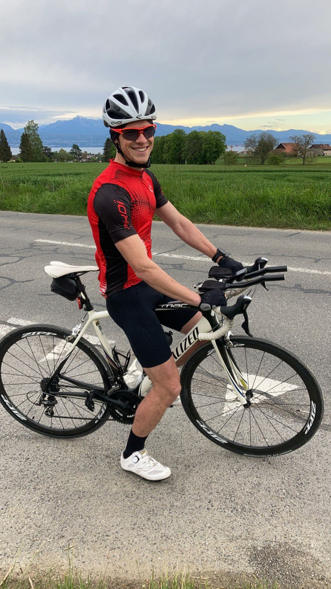

Hi there,
I'm Alexandre Vray
Beyond engineering, I am
Beyond engineering, I am


Beyond engineering, I’m driven by curiosity, challenge, and human connection. The mountains are my playground, where I push my limits through skiing, climbing, and endurance sports. I love turning ideas into tangible projects, learning by doing, and sharing meaningful experiences through sport and community.
"Every race is a lesson in perseverance. Every finish line is a new beginning."
150km • 4h 30min • 2024
42.2km • 3h 45min • 2024
Level 7a+ • Regional Champion
30km • 1h 45min • 2024
1.9km + 90km + 21km • 2024
Helping children with disabilities experience the joy of running and movement. Through adapted training sessions and inclusive events, we create opportunities for every child to push their limits and discover their strength.
Contributing to the development of an association that makes aviation accessible to children with disabilities. Helping them experience the magic of flight and discover new perspectives - literally and figuratively.
Beyond engineering projects, the racing team taught me the power of collaborative work, shared passion, and building something greater than ourselves. Managing team dynamics, fostering inclusion, and creating a strong community culture.
An insatiable curiosity drives me to explore new places, learn about climate science, and understand sustainable solutions for our planet's future. Every journey is an opportunity to grow and discover.
Discovering new cultures, landscapes, and perspectives through travel. Each destination teaches something new about the world and myself.
Passionate about understanding climate science and environmental challenges. Actively learning about sustainability and how we can protect our planet for future generations.
Always seeking new knowledge and skills. From aviation mechanics to environmental engineering, every field offers insights that can make a difference.
"The only source of knowledge is experience."